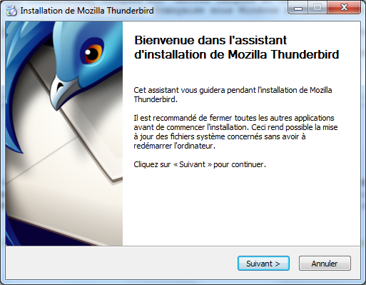
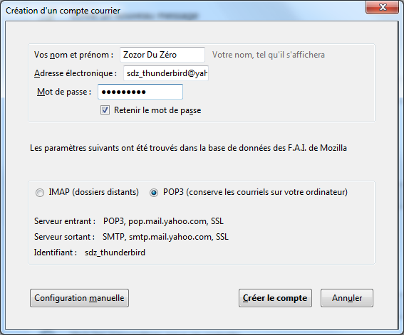
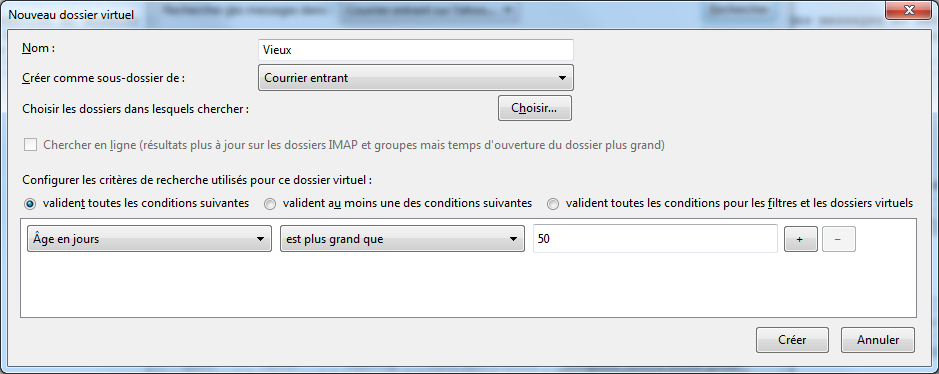
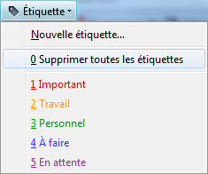
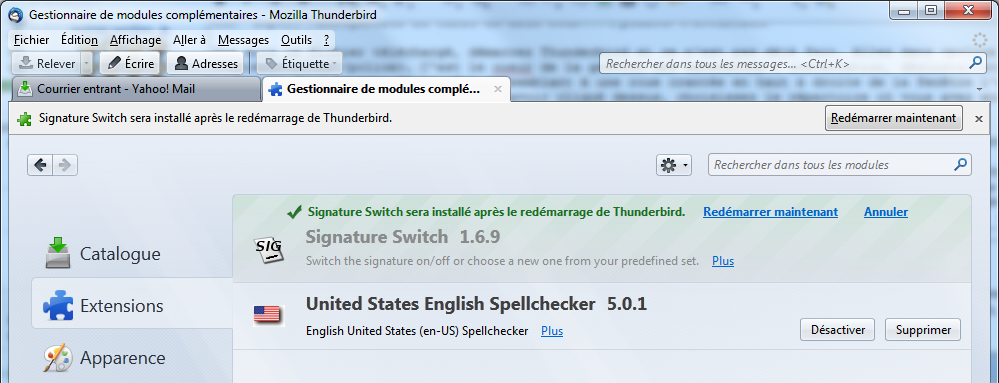
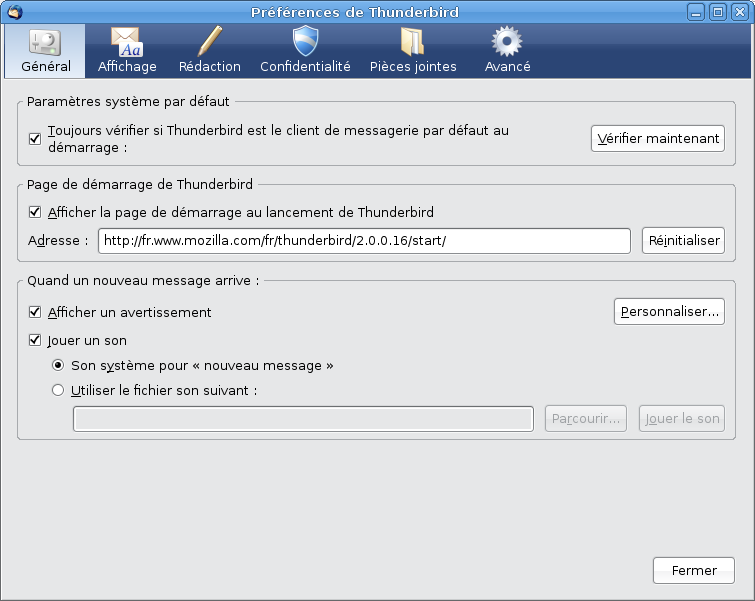

Mozilla Thunderbird est un client de messagerie qui permet d'écrire, de lire et répondre à vos courriers électroniques, également appelés "emails" ou "mails". C'est un logiciel très puissant qui fournit énormément de possibilités, mais qui reste également très simple d'utilisation. Vous allez découvrir tout au long de ce tutoriel comment vous servir de Mozilla Thunderbird de A à Z.
Mozilla Thunderbird est un client de messagerie, c'est-à-dire qu'il permet de lire et d'envoyer des courriers électroniques ou emails. Il se présente de la même façon que les interfaces permettant de lire votre courrier sur une page web, les Webmails. Sauf que là, c'est un logiciel et il permet une gestion beaucoup plus poussée de vos mails, ainsi que la consultation hors-ligne. Vos messages sont stockés sur votre ordinateur, vous pouvez les conserver plus longtemps, contrairement aux quotas fixés par les Webmail. C'est un logiciel libre et gratuit, n'importe quel développeur peut modifier le logiciel et customiser Thunderbird pour ses propres besoins. Une très grande communauté de personnes travaille sur ce projet, c'est un logiciel de qualité.
Thunderbird est donc un logiciel qui s'installe sur votre ordinateur (avec votre accord bien sûr :p ) et qui vous permet de lire vos messages, d'en rédiger, de pouvoir gérer vos contacts et il intègre un puissant outil antispam. Tout comme le navigateur Firefox qui est aussi développé par la fondation Mozilla, Thunderbird peut être personnalisé grâce à des extensions pour ajouter des fonctions ou même changer l'interface. Il permet également de consulter des flux RSS.
Les fonctionnalités
Elles sont nombreuses et on aura le temps d'en parler tout au long de ce tutoriel, mais voici tout de même une liste des fonctions, en dehors des basiques, qui font la puissance de ce logiciel :
Recherche automatique des paramètres de votre messagerie
Vous êtes averti lorsque vous ne mettez pas une pièce jointe dans un message qui contient des mots comme "pièce jointe"
Un gestionnaire d'activité entre Thunderbird et votre fournisseur de messagerie
Barre d'outils de filtre rapide
Navigation par onglet comme les navigateurs internet
Dossiers intelligents
Gestionnaire des extensions
Changement de l'apparence
Outils antispam intégrés performants
Protection renforcée contre les messages frauduleux
Les extensions
Un chapitre y sera consacré dans la 2e partie de ce tutoriel. Pour vous donner un avant-goût, voici deux extensions connues :
Lightning permet de gérer votre emploi du temps. Notez vos rendez-vous, définissez des rappels, et vous pouvez même gérer votre agenda Google!
Avec SignatureSwitch, définissez différents types de signatures types et sélectionnez celle que vous souhaitez dans votre mail!
Contribuer
Et si je ne sais pas programmer ?
Contribuer ne veut pas dire uniquement programmer pour faire des extensions ou des thèmes. Il existe d'autres façons de contribuer sans avoir de connaissances en informatique (un peu quand même :p ). Il est possible de faire des choses très simples :
En parler à votre entourage
Aider les gens sur des forums (par exemple)
Indiquer les erreurs de plantage à l'équipe de développement
Pour télécharger Thunderbird, rendez-vous sur le site de Thunderbird, puis cliquez sur le bouton "Thunderbird Téléchargement gratuit". Le téléchargement va débuter automatiquement pour la version du système d'exploitation et dans la langue que vous utilisez. Si vous téléchargez sur une autre plateforme que celle où vous utilisez Thunderbird, cliquez sur "Autres langues et versions". Vous aurez ainsi une liste complète de toutes les traductions existantes ainsi que de leurs versions sous Windows, Mac ou Linux. La version française sous Windows de Thunderbird 8.0 pèse 15.4Mo.
Installation
Suivez ensuite pas à pas l'installation. Aucune toolbar ou logiciel supplémentaire n'est proposé lors de l'installation, pas d'inquiétude.

Maintenant que Mozilla Thunderbird est installé sur votre ordinateur, nous allons pouvoir passer aux choses sérieuses !
Mozilla Thunderbird est désormais prêt à être utilisé. Maintenant, place à l'action ! ;)
Vous allez maintenant découvrir Thunderbird pour de vrai! Si c'est la première utilisation, avec aucun compte configuré, une fenêtre va s'ouvrir au démarrage pour vous permettre d'y remédier. Sinon, cliquez sur Fichier > Nouveau > Compte courrier.
Pour les besoins de ce tutoriel, j'ai créé une adresse email chez Yahoo!, [email protected]. Cliquez sur Continuer et là, j'espère que vous n'aviez pas passé votre dernière 1/2 heure à chercher les adresses POP ou IMAP et SMTP de votre fournisseur d'adresse mail :p Thunderbird dispose d'une base de données très complète avec les adresses POP, IMAP et SMTP de chaque fournisseur.

Au secours !! IMAP ou POP3 je choisi quoi ?
Comme vous le voyez sur la capture d'écran ci-dessus, Thunderbird répond presque à la question en expliquant que IMAP conserve les mails dans un serveur distant, et que POP3 conserve lui les mails sur votre ordinateur. l'IMAP permet donc de synchroniser les messages, utile si vous utilisez plusieurs méthodes pour lire votre courrier (ordinateur, tablette, smartphone, webmail) mais nécessite beaucoup d'espace sur le serveur pour conserver tous les mails (mais il existe une solution avec Thunderbird). Avec POP, vos messages sont sur votre ordinateur, et ils y restent! Nous utiliserons POP pour ce tutoriel.
Cliquez ensuite sur Créer le compte. Thunderbird vérifie votre mot de passe en essayant de se connecter à votre compte.
Nous allons maintenant voir comment faire pour ne plus rien rater de l'actualité avec Thunderbird grâce à l'utilisation des Flux RSS. Tout d'abord si vous ne savez pas ce qu'est un flux RSS, cette définition par Wikipédia est pour vous :
Citation : Wikipédia
Un flux RSS est un fichier dont le contenu est produit automatiquement (sauf cas exceptionnels) en fonction des mises à jour d’un site Web. Les flux RSS sont souvent utilisés par les sites d'actualité ou les blogs pour présenter les titres des dernières informations consultables en ligne.
Allez dans Fichier > Nouveau > Autres comptes. Sélectionnez "Blog et Nouvelles" dans l'assistant qui s'est ouvert puis "Suivant"
Donnez un nom à votre liste de nouvelles (qui peut être composée de plusieurs Flux)
Puis terminez l'assistant. Une nouvelle arborescence est apparue dans le panneau de gauche.
Cliquez sur le nom que vous avez donné à votre compte dans le menu, en ce qui me concerne Actualité informatique, puis dans la fenêtre principale cliquez sur Gérer les abonnements.
Pour récupérer un Flux RSS, rendez-vous sur un site web qui en dispose (le Site du Zéro par exemple).
Internet Explorer 9, allez dans le menu Outils > Détection de Flux > et choisissez. Récupérez l'adresse de la page qui s'est ouverte.
Mozilla Firefox, allez dans Marques-pages > S'abonner à cette page > et choisissez. Ajoutez-la à vos marques-pages, puis faites un clic droit Propriétés et récupérez l'adresse du Flux.
Vous pouvez ici gérer vos flux : ajouter, modifier, supprimer. Cliquez sur Ajouter et collez dans la fenêtre qui s'ouvre l'adresse du Flux RSS. Après avoir validé, Thunderbird va vérifier le flux et l'afficher dans la liste.
Fermez la fenêtre. Le flux apparaît également dans le panneau de gauche de la fenêtre principale. Les flux RSS bénéficient de la même interface de lecture que les mails. Nous avons donc maintenant une adresse mail et un flux RSS. Maintenant, nous allons régler Thunderbird pour un usage adapté à nos besoins au mieux!
Nous voici donc dans le volet principal de Thunderbird :
En haut, vous avez un menu des plus basiques comme dans chaque logiciel. Vous avez dessus les fonctions principales d'un logiciel de messagerie : relever le courrier, écrire, voir les contacts et étiquette, nous reviendrons sur cette dernière option.
Dans le panneau de gauche, vous avez la liste des comptes avec les dossiers de chacun d'entre eux.
Dans la fenêtre principale, vous avez la liste de vos messages dans la partie d'en haut, et l'aperçu du message sélectionné dans la partie d'en bas.
Les dossiers contenants des nouveaux mails ou flux d'actualités sont en gras et de couleur bleue. Vous avez sûrement remarqué qu'il y a peu de dossiers, c'est normal les dossiers qui n'ont jamais été utilisés ne s'affichent pas. Lorsque vous aurez enregistré un message dans vos brouillons, lorsque vous recevrez du spam ou encore lorsque vous enverrez un mail, les dossiers "Brouillons", "Indésirables" et "Envoyés" apparaîtront.
Point essentiel pour envoyer vos messages : les contacts. Si vous n'avez pas de contacts, à qui envoyer un message ? Et donc pourquoi utiliser un logiciel de messagerie comme Thunderbird ? Et donc pourquoi me lisez-vous ? Parce que vous allez bientôt en avoir ? Ah oui... pas bête. Bon, la suite ! :-°
Il existe deux solutions, la première est la suivante : lorsque vous recevez un message, un simple clic dessus permet de le visionner dans la partie du bas de Thunderbird. Faites un clic-droit sur l'adresse mail à droite de De et un menu contextuel apparaît. Cliquez sur Ajouter l'adresse au carnet d'adresses.
Rien de plus à faire, votre contact est dans la liste des contacts avec son adresse mail et son nom. Autre solution pour ajouter un contact, cliquez sur l'icône Adresses dans le menu en haut de la fenêtre principale de Thunderbird. La fenêtre de votre carnet d'adresses Thunderbird s'ouvre alors.
En cliquant sur l'icône Nouveau contact, la fenêtre consacrée à remplir les informations concernant votre contact apparaît. Vous pouvez donc entrer toutes les informations que vous souhaitez sur la personne ou l'entreprise. Une fois enregistré, le contact apparaît dans la liste. De la même façon que les mails, une fenêtre avec les informations s'affiche en dessous de la liste des contacts avec les informations saisies :
Vous avez plusieurs options utiles en haut de cette fenêtre :
Propriétés : comme son nom l'indique, permet de modifier la fiche sélectionnée, d'ajouter ou de supprimer des informations. Écrire : permet de créer un nouveau message avec comme destinataire le contact de la fiche sélectionnée. Supprimer : supprime la fiche de votre contact.
De la même façon que les dossiers permettent de classer vos messages, on crée des listes pour ranger ses contacts. Il faut cliquer sur Nouvelle liste dans la fenêtre du carnet d'adresses. Une fenêtre apparaît pour détailler les paramètres de cette liste.
Sélectionnez dans quelle arborescence se situera votre liste (Adresses personnelles ou Adresses collectées) puis saisissez son nom, son pseudo et une courte description (les deux dernières options sont facultatives). Si les contacts que vous voulez ajouter à cette liste ne sont pas encore dans des fiches, entrez leurs adresses en dessous. Si vous avez déjà créé leur fiche, cliquez sur Ok sans rien modifier.
La fiche apparaît dans l'arborescence à gauche et au sommet de votre liste de contacts. Vous n'avez plus qu'à effectuer un glisser-déposer de vos contacts dans cette liste.
Comme vous avez pu le constater, le Carnet d'adresses de Thunderbird offre plein d'options intéressantes. Dans le prochain chapitre, vous apprendrez à rédiger un message, faire une mise en page, envoyer des fichiers, etc.
Il est vrai que ce n'est pas ce qu'il y a de plus complexe, mais pour faire honneur à la réputation du site, je dois partir de zéro comme vous le savez ! ;)
Vous avez vu précédemment comment ajouter des contacts et des listes de contacts, vous allez maintenant voir comment envoyer des mails.
Nouveau message
Cliquez sur l'icône située en haut à gauche de la fenêtre principale de Thunderbird : Écrire
Sinon, dans votre carnet d'adresses, sélectionnez un contact puis cliquez sur le bouton Écrire (le même que ci-dessus). Si vous voulez sélectionner plusieurs contacts, enfoncez la touche Ctrl et cliquez sur les contacts à qui vous voulez écrire, relâchez Ctrl puis cliquez sur Écrire.
Répondre à l'expéditeur
Le fait de répondre à l'expéditeur permet de lui renvoyer le message qu'il vous a envoyé suivi de votre réponse. De cette façon, vous pouvez avoir son message sous les yeux pendant que vous y répondez et vous êtes sûr de ne rien oublier, mieux encore, votre expéditeur sait à quel message vous répondez. Pour cela rien de plus simple : Sélectionnez dans la liste de vos messages celui auquel vous souhaitez répondre puis faites un clic-droit > Répondre à l'expéditeur
Vous avez également deux autres possibilités :
Répondre à tout le monde : vous répondrez ainsi à tous les contacts à qui a été destiné le message que vous avez reçu. Répondre à la liste : votre réponse sera envoyée à votre expéditeur mais également à la liste à laquelle il appartient dans votre carnet d'adresses.
Transférer un message
Vous avez reçu un message que vous souhaitez faire circuler à d'autres personnes (on appelle ça une chaîne). Effectuez un clic-droit sur le message et cliquez sur Transférer : cela aura pour effet de placer le message en dessous de votre réponse. Il ne vous restera plus qu'à sélectionner les destinataires, remplir le sujet et écrire un petit message si vous le voulez.
Si vous maniez régulièrement un logiciel de traitement de texte tel que Word ou Writer, vous n'aurez aucun mal à utiliser cette barre d'outils simple et très utile pour la mise en page de vos messages. Voici sinon comment l'utiliser :
1. Sélectionnez un style d'écriture pour mettre en valeur votre texte, et le structurer en définissant les titres, paragraphes, le texte principal etc.
2. La 2e liste déroulante permet de choisir la police de caractère de votre texte.
3. La 1re icône permet de changer la couleur du fond de la page ou la couleur du texte. Les deux autres icônes permettent de modifier la taille (+ ou -) du texte.
4. Ces 3 icônes permettent de mettre votre texte sélectionné en gras, italique ou souligné.
5. Les options qui suivent servent à créer une liste (première icône), créer une liste ou la modifier en remplaçant les boutons par des chiffres (deuxième icône) et de diminuer ou augmenter le retrait (troisième et quatrième icônes).
6. Vous pouvez modifier l'alignement du texte (centré, justifié, à droite, à gauche), insérer un objet dans le texte (une image, un lien, un tableau) ou encore mettre un peu d'humeur dans vos mails avec les smileys.
Thunderbird permet de vérifier l'orthographe de vos mails en temps réel (c'est-à-dire au fur et à mesure que vous écrivez) ou seulement lorsque vous le demandez. Il est également possible d'ajouter des mots dans le dictionnaire si vous utilisez fréquemment ceux qui n'y figurent pas et que vous ne souhaitez plus voir soulignés tout le temps.
Avez-vous un dictionnaire ?
Pour le savoir, allez dans Outils > Options > onglet Rédaction > sous-onglet Orthographe.
Si vous n'avez aucune langue dans la liste déroulante (dans l'image ci-dessus, il y en a une : le français), c'est que vous n'avez aucun dictionnaire installé et aucune correction orthographique n'est possible.
Installer un dictionnaire
Cliquez Télécharger d'autres dictionnaires. Un onglet sous Thunderbird s'ouvre, directement sur la page des dictionnaires des modules du logiciel. Je vais par exemple télécharger le dictionnaire "English US". Une fois celui-ci repéré dans la liste, cliquez sur Télécharger le dictionnaire, une page s'ouvre, cliquez maintenant sur Ajouter à Thunderbird. Une fenêtre s'ouvre.
Acceptez, le module (ou extension, ou add-ons c'est pareil ^^ ) va s'installer et vous pouvez fermer l'onglet. Maintenant dans Outils > Modules complémentaires puis dans le menu à droite Extensions votre dictionnaire apparaît, mais nécessite un redémarrage du logiciel.
Les pièces jointes
Dans les options qui s'offrent à vous pour la rédaction d'un message, vous avez un bouton Joindre qui vous permet d'envoyer un fichier, une page web ou une carte de visite (grâce à la petite flèche juste à droite du bouton).
Comment savoir que j'ai bien mis une pièce jointe dans mon message ?
Un cadre apparaît à droite en face de la liste des destinataires avec la liste des pièces jointes, vous pouvez en ajouter, en supprimer.
Comment savoir qu'un contact m'a envoyé une pièce jointe ?
Quand vous visualisez un message dans la fenêtre principale de Thunderbird, un cadre apparaît en bas cette fois-ci, et si les pièces jointes sont des photos, mails au format .eml ou tout autre document que Thunderbird peut ouvrir, ces pièces jointes apparaissent à la suite du message de votre correspondant. Pour télécharger une pièce jointe provenant d'un message, faites un clic-droit sur la pièce jointe et cliquez sur Enregistrer sous... puis sélectionnez le répertoire où enregistrer le fichier. Si vous avez plusieurs fichiers, cliquez sur Tout enregistrer.
Un simple message peut devenir bien davantage si on prend la peine de bien découvrir toutes les options que Thunderbird possède ! ;)
Imaginez un logiciel qui puisse mettre tous les messages d'un contact à la corbeille, ou dans les indésirables. Imaginez pouvoir créer un filtre, qui supprime tous les messages contenant certains mots, selon si l'expéditeur est dans vos contacts ou non, imaginez un dossier où arriverait directement les mails de certains contacts pour un tri automatique... n'imaginez plus, nous allons le faire !
Comme pour vos documents personnels sur votre ordinateur, vous pouvez créer un dossier pour y placer les fichiers concernant tel sujet. Dans Thunderbird, on peut créer des dossiers pour y placer des mails. Il existe déjà des dossiers dans l'arborescence de vos comptes : Courrier entrant, Brouillons, Envoyés, Indésirables : ce sont des dossiers créés automatiquement lors de la création d'un compte.
Pour créer un dossier, faites un clic-droit sur un compte (Yahoo! Mail pour l'exemple) et cliquez sur Nouveau dossier.... Indiquez le nom du dossier que vous souhaitez créer (ex. : Archives) puis sélectionnez le lieu où il sera placé ; vous pouvez si vous le souhaitez le désigner comme sous-dossier de courrier entrant.
Il apparaît désormais à l'endroit où vous l'avez placé. Pour le voir il est parfois nécessaire de "déplier" un dossier pour y voir ses sous dossiers, on y parvient en cliquant sur la petite flèche (si elle existe), à gauche d'un dossier. Pour placer des messages dans ce dossier, il vous suffit de glisser-déposer les messages dans votre dossier pour les classer. N'hésitez pas à créer d'autres dossiers et sous-dossiers pour mieux vous y retrouver si vous avez beaucoup de mails.
La différence entre les dossiers et les dossiers virtuels, c'est que pour ces derniers, il faut créer des règles. Des règles pour dire à Thunderbird par exemple « Je veux que tous les mails d'hier aillent dans ce dossier » ou « Tous les messages provenant d'adresses qui ne sont pas dans mon carnet d'adresses iront là ». Mais ce n'est pas un dossier où l'on déplace des fichiers, c'est un dossier qui affiche le résultat des recherches, les mails sont toujours dans leur dossier, et s'affichent dans le filtre du dossier virtuel.
Effectuer une recherche
Ouvrez la fenêtre de recherche des mails de la façon suivante : Édition > Chercher > Rechercher dans le courrier (Ctrl + Maj + F).
Cliquez sur Enregistrer comme dossier virtuel, une fenêtre s'ouvre.
Choisissez son nom et sa situation dans l'arborescence de votre compte puis à vous de choisir les conditions. Vous pouvez ajouter des conditions en cliquant sur + ou en retirer avec -. Les options varient dans la deuxième liste déroulante selon ce que vous avez sélectionné dans la première. Voici un exemple pour placer tous les messages d'un dossier qui datent de plus de 50 jours dans le dossier virtuel que je crée :

Validez la création du dossier virtuel par Créer. Fermez la fenêtre de recherche des messages et retournez dans la fenêtre principale de Thunderbird. Un nouveau dossier apparaît dans l'arborescence du compte sélectionné et contient tous les messages correspondants aux critères donnés. Chaque nouveau message arrivant dans votre courrier entrant et répondant à ce critère sera placé automatiquement dans ce dossier.
Il existe deux méthodes de tri de vos messages. La première se situe dans Affichage > Trier par. Il faut auparavant sélectionner le dossier que vous souhaitez trier puis, dans le menu, sélectionner une option de tri : par date, expéditeur, sujet, taille, pièces jointes. Votre choix de classement effectué, sélectionnez Groupé par critère de tri G.
La liste de vos messages disparaît laissant plusieurs arborescences différentes de noms selon votre critère de tri. En sélectionnant par Date, des arborescences nommées par périodes apparaîtront ; en sélectionnant un tri par Destinataire, des arborescences portant les noms des destinataires vous ayant envoyé des messages qui se trouvent dans le dossier que vous triez apparaissent.
Une autre façon de classer ses messages est de définir leur importance. Faites un clic-droit sur un message et dans le menu Étiquettes sélectionnez Important. Dans la liste de vos messages, ce dernier devient rouge. Pour remettre le message à l'état normal, il vous suffit de retourner dans le menu étiquette et de sélectionner Supprimer toutes les étiquettes.

Le menu Étiquette est aussi accessible à partir du clic-droit sur un message. Vous localisez assez rapidement les messages importants, pour le travail à faire lorsque vous visualisez les messages d'un dossier en classant vos messages par étiquette, puis en sélectionnant Groupé par critère de tri G.
Vos comptes de messagerie débordent chaque jour d'un peu plus de messages, et lorsqu'il s'agit d'en retrouver quelques-uns, vous y passez plusieurs heures ? Utilisez l'outil de recherche de Thunderbird, très facile d'utilisation et très efficace ! Sélectionnez le dossier ou le compte où rechercher le(s) message(s) que vous désirez. Dans le menu Édition, sélectionnez Chercher puis Rechercher dans le courrier (Ctrl + Maj + F). La fenêtre de recherche s'affiche (on a déjà été ici et même plus loin pour la création d'un dossier virtuel précédemment).
Par exemple je vais chercher tous les mails de [email protected], j'ai pas beaucoup de mails avec cette adresse provisoire alors on fait avec :p Je sélectionne dans la première liste De, puis dans la deuxième Est et je complète avec l'adresse mail complète comme ceci :
Puis je clique sur Rechercher (en haut à droite).
En cliquant sur Enregistrer comme dossier virtuel, je crée un dossier virtuel avec les résultats de la recherche qui sont actualisés en temps réel. Il existe une foule immense de critères de recherche pour affiner aux mieux vos résultats si vous débordez de mail. Vous découvrez petit à petit les grands atouts de Thunderbird !
Créer des dossiers, dossiers virtuels et filtres pour ranger ses mails et lutter contre le spam est vraiment un atout de Thunderbird. L'essentiel à savoir de Thunderbird se termine donc ici et les opérations plus complexes arrivent !
Et voilà, vous pouvez désormais écrire et recevoir des mails, recevoir des flux RSS, gérer vos contacts, trier vos messages, créer des dossiers virtuels et créer des filtres. Bientôt, Thunderbird n'aura plus de secrets pour vous ! ;)
Il existe deux façons de modifier Thunderbird : vous pouvez ajouter une extension (un module, un add-on c'est la même chose), ou bien un thème (et les Personas). Bon bien sûr, il en existe une autre, c'est un logiciel libre, vous pouvez récupérer le code source et tout modifier vraiment comme vous le souhaitez, mais cela nécessite des connaissances et ce n'est pas le but de ce tuto :p
On pourrait croire que si Thunderbird a besoin d'extension, c'est que c'est un logiciel incomplet. Et bien je vais vous faire voir les choses autrement. Un logiciel, mis à part si c'est quelqu'un qui l'a conçu spécialement pour vous, essai de satisfaire un maximum de gens ; il n'y a ni trop d'options, ni pas assez, mais il y a tout ce qu'il faut pour l'utilisation normal du logiciel par tout le monde. Oui mais voilà, vous avez une façon de procédé à vous, et le fait d'avoir un tout petit truc en plus dans un menu, ça vous aidera énormément... voici venu les extensions, ça peut permettre à Thunderbird de cibler encore plus d'utilisateurs, car il correspondra donc aux besoins d'encore plus d'utilisateurs! Alors on y va?
Des extensions, où ça ?
Des extensions, il en existe des milliers (des millions?) sur internet, vraiment partout. Si vous utilisez Firefox, de la même famille que Thunderbird, vous connaissez déjà peut-être. Dans les dernières versions de ces deux logiciels, le gestionnaire des modules complémentaires (Firefox > Modules complémentaires ou Outils > Modules complémentaires si vous utilisez le menu) intègre un catalogue, mais je trouve qu'il est plus simple de s'y retrouver sur le site officiel des modules pour Firefox, qui dispose de catégories et d'options de tri intéressantes pour trouver l'extension de vos rêves. En plus, quelle chance, c'est en français! C'est par iciiiii!
Une fois le fichier téléchargé, démarrez Thunderbird si ce n'est pas déjà fait. Allez dans Outils > Modules complémentaires. C'est le coeur de la gestion des extensions : installation, désinstallation, activation, désactivation et mises à jour des extensions. Vous trouverez dans le menu de l'icône ressemblant à une roue crantée en haut à droite de la fenêtre l'option pour installer un module : Installer un module depuis un fichier..., après avoir cliqué dessus, choisissez le répertoire où vous avez enregistré votre extension puis sélectionnez-la (c'est un fichier .xpi) et cliquez sur Ouvrir.
Pour les besoins de ce tutoriel, je télécharge l'extension Signature Siwtch qui va me permettre de définir des signatures types pour mes mails personnels et mes mails professionnels par exemple, et ensuite de choisir en un clic quelle signature j'applique au mail que je rédige actuellement. Une fois le fichier sélectionné, une fenêtre s'ouvre avec un compte à rebours, pour que vous preniez le temps de lire que votre action peut comporter un danger. Heureusement ça ne dure pas 3 minutes mais 5 secondes :p
Une fois l'installation terminée (aucune option à choisir, les extensions ne sont pas de gros fichiers c'est du rapide), une notification en haut de la fenêtre de gestion des modules apparait pour vous signaler que l'extension terminera son installation lors du redémarrage de Thunderbird.

Nous verrons plus bas dans ce chapitre comment gérer votre extension (les options, la configuration, la désinstallation etc.), mais déjà, votre extension est installée!
Si vous avez lu comment installer une extension, et que vous avez réussi, vous ne devriez pas avoir trop de mal à installer un thème. C'est très simple, toujours sur le site officiel des modules, il suffit de vous rendre dans le menu, sur la page des thèmes : j'ai choisi la catégorie "Les mieux notés" pour ce tutoriel.
Ensuite il suffit de parcourir les différents thèmes, de regarder les screenshots (captures d'écran) pour voir si ça vous plait ou non en vous rendant sur la page des thèmes. J'ai été attiré par le thème TT DeepDark (disponible ici) qui nous donne un Thunderbird très sombre, mais sobre et classe à mon goût. Vous n'êtes bien sûr pas obligé de choisir le même pour tester si vous n'aimez pas :p
De la même manière que les extensions, il vous suffit de télécharger le thème. Parfois (de même que les extensions), il est nécessaire de démarrer le téléchargement en 2 étapes : il faut accepter une licence qui en général explique que le thème est à usage personnel et non-commercial.
Une fois votre fichier téléchargé, il ne reste plus qu'à l'installer. Allez dans Thunderbird, puis Outils > Modules complémentaires, allez dans l'onglet Apparence dans le menu de gauche puis cliquez sur l'icône des outils en haut à droite puis Installer un module depuis un fichier.... Sélectionnez ensuite votre fichier .xpi (ou .jar), une fois validé et installé, exactement de la même façon qu'une extension, vous devez redémarrer Thunderbird et le thème installé sera affiché par défaut. Et voici le magnifique résultat :
Devinez quoi? On ne bouge pas de notre fenêtre des modules complémentaires dans Outils > Modules complémentaires, c'est en général ici que tout se passe ;) Et ce qui est bien, c'est que tout est simple à gérer, vous avez 4 catégories tout simplement :
Le catalogue vous permet de rechercher des extensions dans le "Magasin" de Thunderbird, on ne s'attardera pas trop dessus, il est assez simple d'utilisation et vous trouverez sans doutes votre bonheur. Ce que nous allons voir ici c'est comment gérer vos extensions et thèmes et les configurer.
Les extensions
En vous rendant dans Extensions du menu de gauche (voir image ci-dessus), la liste des extensions installées sur Thunderbird s'affiche. Par exemple, sur le screen ci-dessous, 2 extensions dont nous avons parlé durant ce tutoriel, SignatureSwitch et le dictionnaire anglais US, mais également une extension ajoutée avec un thème (Silvermel) nécessaire à son bon fonctionnement.
A droite de chaque extension, différents choix s'offrent à vous :
Supprimer : je ne vais pas vous faire un dessin, ce bouton permet de retirer une extension. Le changement sera effectif au redémarrage de Thunderbird.
Désactiver : ce bouton permet de désactiver l'extension, qui, également au prochain redémarrage n'apparaitra plus. Si jamais vous souhaitez la réutiliser, il n'y a qu'à l'activer!
Options : c'est cette option que nous allons voir un peu plus en détails, elle permet de paramétrer les extensions, à condition que cela soit possible.
Dans les extensions installées pour l'exemple durant ce tutoriel, Signature Switch a besoin d'être configuré par exemple. Pour rappel cette extension permet de définir des signatures types pour vos mails et ainsi vous sélectionnez par exemple la signature "Pro" ou la signature "Perso" pour le mail que vous rédigez. Nous allons voir comment procéder, en cliquant sur Options correspondant à cette extension, et une fenêtre va s'ouvrir pour vous permettre de configurer l'extension.
Pour ajouter une signature type, cliquez sur + Nouvelle. Tout d'abord, il vous faut une signature, donc en même temps allez dans le bloc note et notez les coordonnées dans un fichier .txt que vous souhaitez afficher. J'ai par exemple, pris au hasard les adresses de Simple IT pour exemple et j'ai créé mes deux signatures dans deux fichiers distincts.
Citation : Signature Pro
Simple IT 28 Boulevard Haussmann 75009 Paris France
Citation : Signature Perso
Site du Zéro 23 Rue Le Peletier 75009 Paris France
Il me suffit ensuite de remplir le nom de la signature, de sélectionner votre fichier, de choisir, optionnellement un raccourci clavier (mais ce n'est pas très utile), et vous pouvez même choisir certaines adresses de contacts où la signature sera appliquée automatiquement! Si c'est pas génial ça :)
Ensuite dans la rédaction de votre message, il vous suffit de sélectionner dans Options > Signature Switch la signature configurée de votre choix puis elle apparait en bas de votre message en un clic!
Voilà une extension de configurée! Je vous laisse découvrir comment procéder pour toutes les autres que vous installerez, parce que sinon on est pas rendu ^^
Vous venez de découvrir l'une des clés du succès des deux logiciels phares de Mozilla (Firefox et Thunderbird). Cela vous a plu ?
Ici nous allons découvrir comment faire pour que chaque utilisateur de votre ordinateur puisse avoir "son" Thunderbird personnalisé, comment faire pour sauvegarder/copier votre profil pour ne pas tout perdre en cas de virus, panne d'ordinateur etc.
Par défaut, un profil est créé automatiquement quand vous ouvrez Thunderbird, c'est celui où vous avez configuré durant ce tutoriel une ou plusieurs adresses de messagerie. Vous pouvez par exemple créer un second profil pour un membre de votre famille ou un ami, si vous utilisez un ordinateur commun, qui lorsqu'il sera créé, ferra comme si cette personne avait son propre Thunderbird d'installé. Car votre profil contient vos messages, vos contacts, votre thème, les extensions que vous utilisez et vos paramètres à vous. Imaginez que votre fils installe pour sa messagerie un thème à son goût, cela ne vous plaira pas forcément ^^ Si vous souhaitez que vos messages ne puissent pas être accessibles à portée de clic, créer différents profils pour différentes personnes vous permet de résoudre ces problèmes. Cela peut même servir à différencier vos adresses mails pro et perso. Convaincu? Alors c'est partiii :)
Pour créer un nouveau profil, vous devez fermer Thunderbird, puis aller dans Démarrer > Exécuter (sous Windows) ou dans une console (sous Linux) puis tapez thunderbird -profilemanager, une fenêtre s'affiche :
Comme vous le voyez, j'ai moi même créé un nouveau profil pour les besoins de ce tutoriel nommé "Tests" pour éviter de prendre exemple sur mes mails personnels, mes contacts et tout le reste. Il y a donc deux profils créés, mais il est possible d'en faire de nombreux. Bon je n'ai pas testé jusqu'à combien on pouvait aller :p Normalement, il existe le profil "default", vous pouvez le renommer tout simplement en cliquant sur Renommer un profil...
Nous allons maintenant créer un nouveau profil. Tout simplement, cliquez sur Créer un profil..., une fenêtre d'assistant va s'ouvrir avec une explication sur les profils, cliquez ensuite sur Suivant pour voir cette fenêtre s'afficher :
Vous pouvez choisir le nom du profil, le plus simple étant de mettre le nom de la personne qui l'utilise. Changer l'emplacement par défaut de là où est créé votre compte n'est pas obligatoire, c'est utile lorsque vous importer un profil d'un autre ordinateur par exemple, il vous suffit de sélectionner le dossier importé (que l'on place généralement dans le répertoire des profils) et de démarrer votre profil : tous vos messages, contacts, thèmes et extensions seront là, prêts à l'utilisation. Cliquez ensuite sur Terminer et le nom du compte apparait dans la liste de la fenêtre du gestionnaire de profil.
Il est important de savoir que les profils sont des dossiers composés de fichiers qui enregistrent les paramètres personnels d'un utilisateur (messages, carnet d'adresses, extensions, thèmes etc.).
L'intérêt de devoir déplacer un profil se présente si vous souhaitez changer de système d'exploitation, de Windows à Linux par exemple (excellente initiative, dans ce cas :p ) et garder tous vos messages, votre carnet d'adresses, la façon dont vous avez personnalisé Thunderbird, etc. Vous pouvez également avoir besoin de déplacer votre profil d'un ordinateur à un autre.
Autre possibilité, vous souhaitez faire une copie de votre profil régulièrement par mesure de sécurité pour pouvoir, en cas de problème, restaurer votre messagerie et toute sa configuration dans son état initial. Nous allons voir comment faire.
Maintenant, quelque chose qui a son importance : où sont les profils de Thunderbird ?
Avec Windows
Cliquez sur Démarrer puis Exécuter et tapez ceci :
%AppData%
Avec Windows XP, trouvez le dossier Mozilla Thunderbird, ouvrez-le et les dossiers de vos profils apparaîtront : copiez-les quelque part, dans un endroit plus accessible (le Bureau, par exemple).
Avec Vista, il vous faut aller dans le dossier Roaming avant de trouver le dossier Mozilla Thunderbird.
Avec Unix / Linux
~/.thunderbird/<Nom du profil>/ (~/.mozilla-thunderbird/<Nom du profil>/ sous Debian)
Avec Mac OS
~/Library/Thunderbird/Profiles/<Nom du profil>/ ou ~/Library/Application Support/Thunderbird/Profiles/<Nom du profil>/
Pareil, gardez le(s) dossier(s) de vos profils à portée de main.
Nous allons maintenant voir comment déplacer un profil de Windows à Linux.
Vous devez maintenant placer le(s) dossier(s) profil(s) dans le répertoire de Mozilla Thunderbird spécifique au système d'exploitation et indiqué précédemment pour Windows, Linux et Mac.
Tout d'abord, fermez toutes les fenêtres de Mozilla Thunderbird, le logiciel doit être complètement fermé.
Ensuite, on va ouvrir le gestionnaire de profil de Thunderbird.
Avec Linux, tapez la commande :
thunderbird -profilemanager
Avec Windows, allez dans Démarrer > Exécuter... et tapez :
thunderbird -P
Normalement, une petite fenêtre s'ouvre.
Cliquez sur Create Profile puis sur Next, remplacez le texte Default User par le nom que vous souhaitez donner au compte, puis cliquez sur Choose Folder. L'explorateur de fichiers va s'ouvrir dans le répertoire qui contient les profils, il ne reste plus qu'à sélectionner le vôtre et cliquer sur Ouvrir. Terminez et voilà : normalement, tout fonctionne comme il faut !
1. Il est possible d'utiliser un même profil Thunderbird pour Windows et Linux en même temps (comme ça, tout est synchro). Pour cela, je vous conseille un tutoriel : celui de Asibasth qui explique la manoeuvre avec les profils Firefox.
2. Tout ce qui a été dit dans ce chapitre (y compris l'astuce ci-dessus) est également valable pour Mozilla Firefox, sauf que le répertoire qui contient les profils change de nom (il faut aller dans Mozilla puis dans Firefox).
Maintenant toute la famille est sur Thunderbird et chacun a son propre thème, ses propres extensions et vous sauvegardez vos messages régulièrement en cas de problème :)
Votre courrier téléchargé automatiquement sur Thunderbird toutes les trois minutes, les indésirables qui vont directement dans la Corbeille, les messages de plus de 1 Mo qui sont refusés... nous verrons tout cela et plus dans cette partie. ;) Cela devient intéressant !
Toute cette partie se déroule dans Outils > Paramètres des comptes. Nous allons voir tous les paramètres possibles des comptes en partant - logiquement - de haut en bas dans le menu de gauche de la fenêtre des Paramètres des comptes.
Paramètres serveurs
Sélectionnez Paramètres serveur dans l'un de vos comptes de messagerie.
Je vous conseille de ne pas toucher aux premières options de paramétrage ; si tout fonctionne bien, mieux vaut ne rien toucher :D (Nom du serveur, Nom d'utilisateur, Port).
Les connexions sécurisées
Hum... je vais essayer d'être assez clair. Thunderbird propose de sécuriser vos mails grâce à deux protocoles : TLS et SSL. Ces deux protocoles permettent d'établir une connexion sécurisée entre un client et un serveur après authentification. À moins que vous ne véhiculiez des informations top-secrètes à vos contacts, je ne pense pas que vous aurez à utiliser de connexion sécurisée ; pour ma part, je laisse coché sur Jamais.
Pour en savoir plus sur le SSL, lisez cet article du site commentcamarche.net et pour TLS, cet article de TechFAQ.
Paramètres du serveur
C'est là la partie la plus intéressante. Elle vous permet de configurer Thunderbird, et vous pouvez par exemple vérifier le courrier au lancement de Thunderbird en cochant Vérifier le courrier au lancement, demander de vérifier les messages toutes les x minutes et les télécharger automatiquement, etc. À vous de personnaliser au mieux ces options. Il est également possible de vider la corbeille chaque fois que vous fermez Thunderbird, mais attention qu'aucun message ne parte par erreur dans ce dossier. ^^
Paramètres copies et dossiers
Maintenant, cliquez sur Copies et dossiers d'un de vos comptes que vous voulez paramétrer. Cette fenêtre permet de "demander" en quelque sorte à Thunderbird de déplacer vos messages envoyés dans un certain dossier, qui n'est pas forcément le dossier Envoyés du compte, mais celui d'un autre compte ou même d'un dossier personnel autre que vous avez créé ; dans ce cas, il vous faut sélectionner Autre. Cette opération est également possible pour les Brouillons et les Modèles. Vous pouvez créer un modèle de message et l'enregistrer dans le dossier Brouillons par exemple.
Rédaction et adressage
Cette partie est très intéressante : en effet, il vous est possible de demander à ce que les messages soient au format HTML (en décochant, ils seront en texte brut, plus apprécié) et de choisir où sera écrite votre réponse lorsque vous citez un message (en cliquant sur Répondre, par exemple). Je vous conseille de choisir La réponse commence avant la citation car cela permet à la personne qui reçoit le message de le voir directement, et c'est pratique, surtout si le message est long : il risque de croire que vous lui renvoyez simplement son message. ^^
Espace disque
Cocher la case Les messages dont la taille dépasse x ko permet d'empêcher des messages trop lourds (contenant normalement des pièces jointes) d'être téléchargés par Thunderbird.
Si vos messages ont peu d'importance, vous avez par exemple un compte dédié aux forums : vous recevez des messages qui vous informent de nouvelles réponses, vous avez la possibilité de supprimer tous les messages qui ont plus de 30 jours, tous les messages sauf ceux qui ont moins de 30 jours ou de supprimer tous les messages lus, tout simplement.
Paramètres pour les indésirables
Cette partie des paramètres est entièrement dédiée aux indésirables, sujet qui prend une place importante dans le courrier électronique vu le nombre qui circulent chaque jour. En cochant la case Activer les contrôles adaptatifs de courriels indésirables pour ce compte, cela permet à Thunderbird d'analyser les messages que vous indiquez en tant qu'indésirables, et de pouvoir repérer les indésirables. La seconde option permet d'indiquer à Thunderbird de ne pas classer les messages qu'il pense indésirables si les auteurs sont dans la liste de contacts. Il est également possible de déplacer les courriers indésirables dans un autre dossier que le dossier Indésirables du compte : par exemple, créez un dossier Spam et redirigez-y tous vos Indésirables directement ; avant la fermeture de Thunderbird, vous n'avez à vider qu'un dossier. Si vous avez beaucoup de comptes, c'est très pratique. Dans le même genre, il est possible (tout en bas) de demander à Thunderbird à ce que les indésirables soient supprimés à partir d'un certain nombre de jours.
Accusés de réception
Il est possible de personnaliser les options des accusés de réception, par défaut à l'origine. En cochant Personnaliser les accusés de réception pour ce compte, vous pouvez choisir de demander automatiquement un accusé de réception au destinataire de votre message, de déplacer les accusés de réception dans un dossier particulier. Il est également possible de refuser tout accusé de réception d'un destinataire inconnu.
Les préférences générales du logiciel (et non pas d'un compte en particulier) sont disponibles via le menu Outils > Préférences (avec Linux, c'est dans le menu Édition > Préférences).
Une fois la fenêtre ouverte, vous pouvez voir l'interface des préférences séparée en 6 onglets qui contiennent eux-mêmes des parties distinctes.
Voici le premier onglet Général :

Cette page permet de configurer des options générales (d'où le titre, je crois ^^ ) comme la vérification à chaque démarrage de Thunderbird s'il est le client de messagerie par défaut, la page qui sera affichée au démarrage de Firefox (hé oui, c'est possible d'afficher le SdZ en page d'accueil de Thunderbird ! :) ), de décider si un son et / ou un avertissement sera joué lors de la réception d'un nouveau message.
Le second onglet, Affichage :
Il permet de définir la couleur du texte ou du fond d'un message, les polices, la manière d'afficher une citation (couleur, mise en page) et d'afficher ou non les émoticônes graphiquement (soit comme ça => :) ) ou en texte :
;)
Le troisième onglet, Rédaction :
Comme le second onglet, il concerne les messages précisément en permettant de choisir entre transférer un message en l'intégrant dans le message et par pièce jointe, de sauvegarder les messages régulièrement (pendant la rédaction), si vous écrivez un roman. ^^
L'onglet Rédaction contient 3 autres onglets, si vous ne l'avez pas remarqué. Le premier, nous venons de le voir ; le second, l'autocomplétion des adresses (très, très pratique !) et choisir dans quel groupe de contacts ajouter les adresses à qui on envoie un message, adresses qui ne sont pas encore dans votre carnet d'adresses.
Le troisième onglet permet d'installer un dictionnaire (on l'a déjà vu dans ce tuto), de choisir la langue, de demander une vérification avant l'envoi ou / et pendant la saisie.
Passons maintenant au quatrième onglet, Confidentialité : il concerne les paramètres de votre vie privée.
Enfin, Vie privée : privée, pas pour le moment. L'onglet Confidentialité contient 4 sous-onglets, intéressons-nous d'abord au premier onglet sur les Indésirables. Il permet de choisir si l'on veut déplacer les messages que l'on marque en tant qu'Indésirables dans un dossier spécifique et de marquer ces indésirables en lus (très utile quand on a peur d'ouvrir ces messages ;) ).
Le second sous-onglet Courrier frauduleux contient une option : signaler (coché) ou non (décoché) si le message qu'on lit est frauduleux, s'il l'est bien sûr :D .
Le troisième sous-onglet concerne les antivirus, comme le sous-onglet précédent, il propose un large choix : permettre (ou non) aux antivirus de placer des messages suspects en quarantaine.
Le dernier sous-onglet concerne la protection des mots de passe, car ils peuvent être affichés dans Thunderbird (dans Modifier les mots de passe stockés en bas du sous-onglet) ; il est donc proposé un mot de passe principal qui demandera à qui voudra voir / modifier les mots de passe un mot de passe général.
Passons maintenant au cinquième onglet Pièces Jointes :
Tout simple : il donne la possibilité de choisir un répertoire qui sera tout le temps utilisé pour y enregistrer les pièces jointes, ou alors de toujours demander où les enregistrer .
Rapide pour le cinquième onglet ; on devra cependant s'attarder un peu plus sur le sixième, qui contient 4 sous-onglets.
Onglet n°1 : concerne toutes les options de l'affichage des messages dans la fenêtre principale de Thunderbird.
Onglet n°2 : permet de donner un temps maximal de connexion à Internet, de modifier les paramètres du mode hors-ligne de Thunderbird, et la possibilité de compacter les dossiers si l'opération peut économiser un peu (vraiment un tout petit peu ^^ ) de place sur le disque dur.
Onglet n°3 : permet de définir si vous voulez que les mises à jour concernant les extensions de Thunderbird et Thunderbird lui-même soient vérifiées automatiquement ou non, de choisir s'il faut demander ou installer automatiquement les mises à jour et indiquer si quelque chose a été désactivé.
Onglet n°4 : cette partie concerne les certificats, il n'y a pas besoin de s'y intéresser réellement.
Il existe beaucoup de choses à paramétrer dans Thunderbird, vous venez d'en découvrir une partie.
Il suffirait de chercher "Thunderbird Portable" sur un moteur de recherche pour trouver sans aucun problème un site qui propose cette version de Thunderbird en téléchargement. Seulement j'ai décidé de me fier à un site... en Anglais. :p Non ce n'est pas pour vous embêter mais car c'est un site qu'il faut connaitre pour ceux qui veulent transporter leurs logiciels partout : il propose beaucoup d'autres logiciels portables (FileZilla, FireFTP, Firefox, Pidgin, Notepad++, XAMPP, KompoZer, NVU, GIMP, VLC Media Player, Audacity, VirtualDub, OpenOffice, 7Zip... STOP ! Je crois que là je vous ais convaincu non ? ^^ non ? :euh: Bon tant pis j'aurais essayé au moins. ^^
Le site PortableApps.com est en anglais mais si vous maitrisez quelques mots (au moins autant que moi et c'est pas bien dur :D ) vous vous en sortirez sans problèmes.
Pour télécharger Thunderbird Portable (et la version française c'est mieux ^^ ) c'est ici. Comme de par hasard, il a fallu que l'aide ne soit pas disponible en français.
Désolé pour les utilisateurs de Linux et Mac, Thunderbird n'est disponible que pour Windows. :(
C'est plus pratique que de se trimbaler son dossier de profil non ? Une fois tout paramétré, il n'y a plus qu'à se brancher sur un ordinateur ! :)
{kind=link}
{kind=link}
{kind=link}
{kind=link}